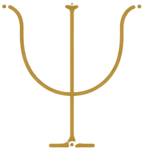
Глубинная психология
Опираемся на аналитическую психологию Юнга: архетипы, тень, сновидения и воображение. Симптом читаем как приглашение к диалогу с бессознательным.
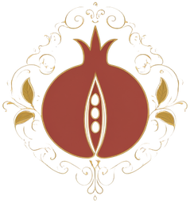
Лаборатория феминностипсихология · миф · искусство01 Лаборатория феминности
Междисциплинарный проект, исследующий женский опыт через глубинную психологию, искусство, культуру и миф. Феминность не существует в единственном числе: она складывается из множества образов, ролей, противоречий и личных историй.
На встречах Лаборатории мы создаём творческое пространство, в котором разные грани женского естества — отношения, телесность, призвание — могут быть изучены и исцелены.
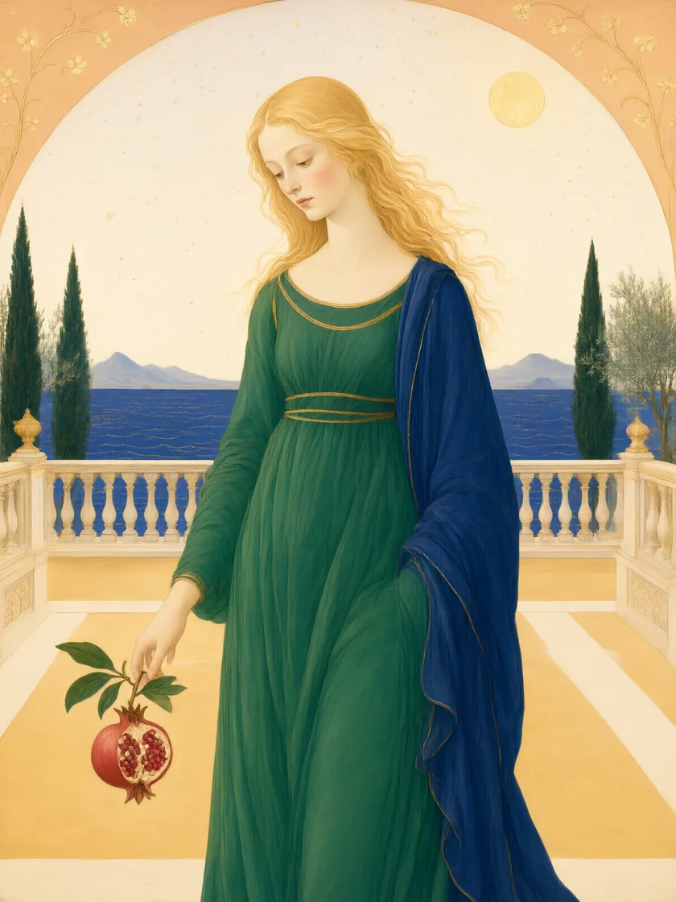
02 Феминность
Феминность долго описывали чужим голосом: её определяли роли, ожидания и взгляд со стороны. Нам хочется вернуть ей право первого лица — и услышать, как она звучит сегодня, в опыте живой женщины.
За последние десятилетия женские роли изменились быстрее, чем язык, которым мы о себе говорим. Между старыми образами и новой реальностью осталось пространство, в котором важно побыть и освоиться — без спешки и без готовых ответов.
Мы смотрим на феминность не как на свойство и не как на норму, а как на опыт и процесс: телесный, творческий, мифологический, личный. Поэтому исследуем её в компании других женщин — и через несколько оптик сразу.
«Феминность не существует в единственном числе»
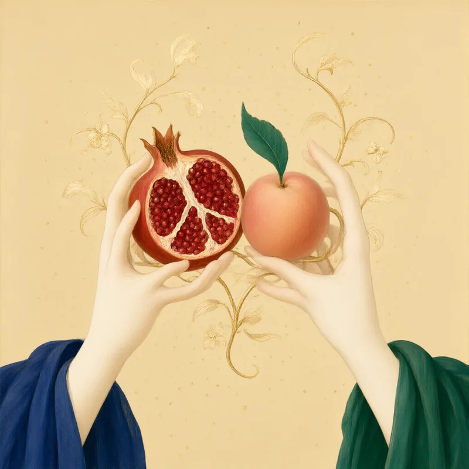
03 Наша оптика
В основе встреч — сплав аналитической психологии, арт-терапии и сказкотерапии. Мы смотрим на женский опыт одновременно через четыре окна, чтобы ни одна грань не потерялась.

Опираемся на аналитическую психологию Юнга: архетипы, тень, сновидения и воображение. Симптом читаем как приглашение к диалогу с бессознательным.
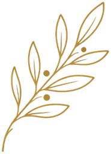
Мифы и сказки хранят женские сценарии тысячелетиями. Мы примеряем их, спорим с ними и переписываем — пока не найдём свои.
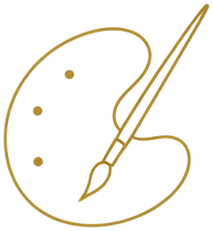
Кисть, глина, коллаж, движение и голос говорят то, для чего ещё нет слов. Арт-терапия позволяет встретить чувство в безопасной форме.
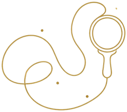
Теория важна, но центр тяжести — история каждой участницы. Мы не даём универсальных рецептов: мы сопровождаем поиск собственного языка.
психология×миф×искусство×личный опыт
04 Для кого
Лаборатория подойдёт, если вы:
Мы работаем в группах на 8–12 участниц и индивидуально. Нам не важна «правильная» феминность — важна живая: со всеми её противоречиями, сезонами и оттенками.
05 О нас
Лабораторию создали Полина Кронер и Вероника Гугучкина — аналитические психологи, арт-терапевты и исследовательницы женских образов. Мы верим, что психологическая работа может быть красивой: поэтому встречи похожи на мастерскую художника и на сад одновременно.
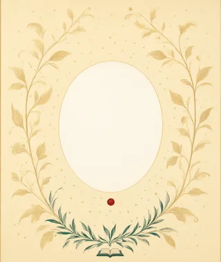
ПКклинический и аналитический психолог
Клинический психолог (МГУ). Окончила программы «Терапия экспрессивными искусствами» (МГППУ) и «Основы аналитической психологии» (МААП). Изучала современное искусство в Школе Родченко и Британской высшей школе дизайна. В терапевтической практике с 2021 года, групповые программы ведёт с 2019-го: работала психологом в школе «Интеграл», делала проекты в креативной усадьбе «Гуслица» и пространстве «Кристалл».
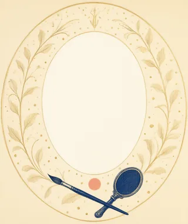
ВГдизайнер, арт-терапевт, аналитический психолог
Училась на художественно-графическом факультете КубГУ, работала графическим дизайнером в издательстве и креативных агентствах. Окончила Московский институт психоанализа по специальности «индивидуальное и семейное консультирование», училась в МААП и на детской аналитической программе «Голос детства». Ведёт частную практику с детьми, подростками и взрослыми в аналитическом и арт-терапевтическом подходах.
06 Встречи
Каждый сезон мы открываем новое исследование — цикл встреч вокруг одного женского образа: Персефоны, Венеры, Деметры, Ариадны. Ниже — летопись кругов и карточки циклов с ссылками на их отдельные сайты.
Терраса кафе «Инжир», Москва. Три часа, чай, краски и разговор о теле и красоте без подготовки.
Шесть встреч плюс осенний интенсив на террасе. Группа до 10 участниц.
Новое исследование о любви и границах сердца. Набор откроется в ноябре.
Весенний цикл, пространство «Кристалл». Семь встреч о маршруте и темпе.
Осенний цикл в усадьбе «Гуслица»: пять встреч о силе и истощении.
Первая встреча Лаборатории, усадьба «Гуслица». С неё начался наш круг.
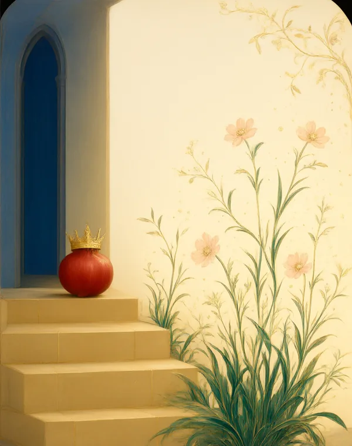
дочь, мать и своё царство
Цикл о отделении, границах и праве на собственный сезон жизни. Читаем миф о спуске и возвращении и переписываем его в личную сказку.
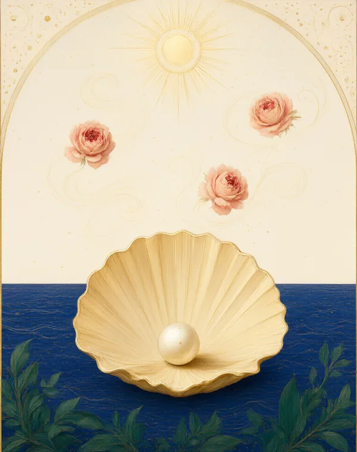
тело, желание, красота
Цикл о телесности и либидо: возвращаем себе право на удовольствие, видимость и любовь к собственному телу. Много живописи и движения.
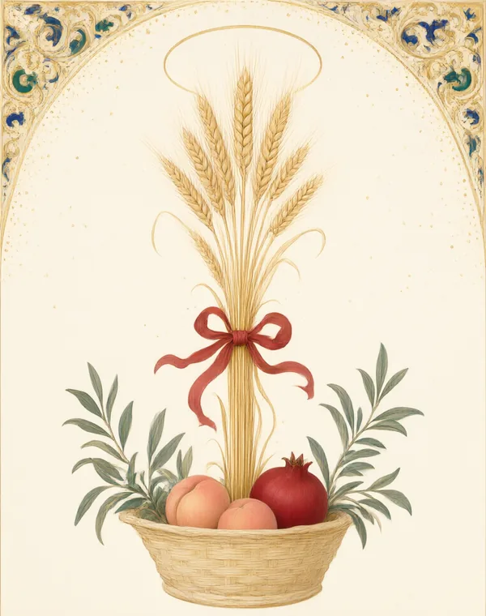
забота и её пределы
Цикл для тех, кто заботится: матери, дочери, помогающие. Учимся отличать заботу от истощения и находить источники силы.
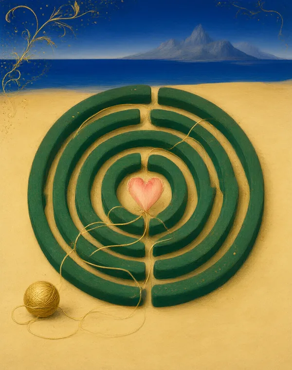
нить и призвание
Цикл о призвании и собственном маршруте: из чего ткётся наша нить и как не потерять её в чужом лабиринте.
07 Как это происходит
Встреча длится три-четыре часа и устроена как ритуал с понятной структурой — чтобы психика могла расслабиться и раскрыться. Ниже — шесть движений каждого круга.
Заземление, минута тишины, намерение на встречу. Знакомимся заново, даже если знакомы сто лет.
Миф, архетип, культурный образ — и то, как они отзываются в личных историях участниц.
Краски, коллаж, глина, голос: даём чувству форму, не требуя от него отчёта.
Пишем и пересказываем собственную сказку, ищем её продолжение и своих союзников.
Танец, дыхание, контакт: возвращаемся в тело как в дом, из которого нас часто выселяли.
Рефлексия, круг поддержки и маленький ритуал прощания со встречей — чтобы уйти с полнотой.
08 Приглашение
Ближайшая встреча — открытый круг-знакомство с Лабораторией. Приходите без подготовки: достаточно интереса и получаса тишины для себя. А если хотите быть в курсе новых циклов — оставьте почту, мы пишем редко и по делу.
воскресенье, 14 сентября 2025, 12:00
Знакомимся с Лабораторией, говорим о теле и красоте, пишем первый этюд сезона. Встреча бесплатная, по записи.
терраса кафе «Инжир», Москва, Хамовники
3 часа, материалы и чай включены
группа до 12 участниц
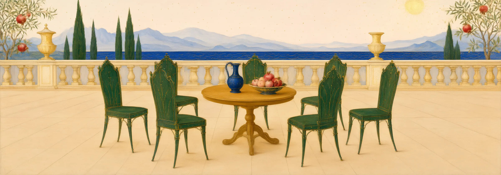